嵌入式C修养——前导
嵌入式C语言与ARM架构体系
前导
在开始我们嵌入式C语言学习的路程之前,先简单的回顾一下一些工具的简单使用.
在嵌入式下,我们经常会使用一些简单的工具,比如说vim, git等等.
vim
vim是我们的一个常用工具,一些操作系统是默认有vim的. 但是我们常见的ubuntu是没有vim 而是只有vi的
啥是vi呢,就是visual interface的一个缩写.我们以前的文本编辑器都是使用行编辑器ex的命令, 后面,我们有了vi来增强他,但是还是会有不少的缺陷.于是我们现在又有了VI improved,就是增强版本.
使用如下的命令可以安装vim
# apt-get install vim
sudo apt-get install vim 在其他的Unix系统下,可能使用的包管理器不太一样,这个时候,我们就可以使用对应的包管理来下载vim
想查看自己有没有正常的安装,可以使用命令
vim -v 查看版本信息即可
这是我的Ubuntu输出的信息
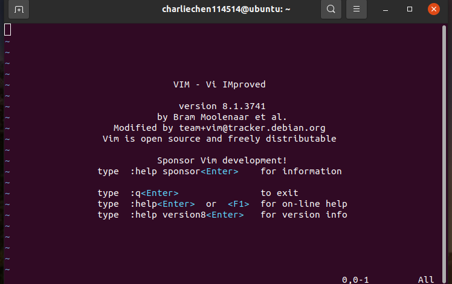
Linux vi/vim
所有的 Unix Like 系统都会内建 vi 文书编辑器，其他的文书编辑器则不一定会存在。
但是目前我们使用比较多的是 vim 编辑器。
vim 具有程序编辑的能力，可以主动的以字体颜色辨别语法的正确性，方便程序设计。
什么是 vim？
Vim 是从 vi 发展出来的一个文本编辑器。代码补全、编译及错误跳转等方便编程的功能特别丰富，在程序员中被广泛使用。
简单的来说， vi 是老式的字处理器，不过功能已经很齐全了，但是还是有可以进步的地方。 vim 则可以说是程序开发者的一项很好用的工具。
连 vim 的官方网站 (https://www.vim.org/) 自己也说 vim 是一个程序开发工具而不是文字处理软件。
vim 键盘图

vi/vim 的使用
基本上 vi/vim 共分为三种模式，命令模式（Command Mode）、输入模式（Insert Mode）和命令行模式（Command-Line Mode）。
命令模式
用户刚刚启动 vi/vim，便进入了命令模式。
此状态下敲击键盘动作会被 Vim 识别为命令，而非输入字符，比如我们此时按下 i，并不会输入一个字符，i 被当作了一个命令。
以下是普通模式常用的几个命令：
- i — 切换到输入模式，在光标当前位置开始输入文本。
- x — 删除当前光标所在处的字符。
- : — 切换到底线命令模式，以在最底一行输入命令。
- a — 进入插入模式，在光标下一个位置开始输入文本。
- o：在当前行的下方插入一个新行，并进入插入模式。
- O — 在当前行的上方插入一个新行，并进入插入模式。
- dd — 删除当前行。
- yy — 复制当前行。
- p — 粘贴剪贴板内容到光标下方。
- P — 粘贴剪贴板内容到光标上方。
- u — 撤销上一次操作。
- Ctrl + r — 重做上一次撤销的操作。
- :w — 保存文件。
- :q — 退出 Vim 编辑器。
- :q! — 强制退出Vim 编辑器，不保存修改。
若想要编辑文本，只需要启动 Vim，进入了命令模式，按下 i 切换到输入模式即可。
命令模式只有一些最基本的命令，因此仍要依靠底线命令行模式输入更多命令。
输入模式
在命令模式下按下 i 就进入了输入模式，使用 Esc 键可以返回到普通模式。
在输入模式中，可以使用以下按键：
- 字符按键以及Shift组合，输入字符
- ENTER，回车键，换行
- BACK SPACE，退格键，删除光标前一个字符
- DEL，删除键，删除光标后一个字符
- 方向键，在文本中移动光标
- HOME/END，移动光标到行首/行尾
- Page Up/Page Down，上/下翻页
- Insert，切换光标为输入/替换模式，光标将变成竖线/下划线
- ESC，退出输入模式，切换到命令模式
底线命令模式
在命令模式下按下 :（英文冒号）就进入了底线命令模式。
底线命令模式可以输入单个或多个字符的命令，可用的命令非常多。
在底线命令模式中，基本的命令有（已经省略了冒号）：
:w：保存文件。:q：退出 Vim 编辑器。:wq：保存文件并退出 Vim 编辑器。:q!：强制退出Vim编辑器，不保存修改。
按 ESC 键可随时退出底线命令模式。
简单的说，我们可以将这三个模式想成底下的图标来表示：

vi/vim 使用实例
使用 vi/vim 进入一般模式
如果你想要使用 vi 来建立一个名为 runoob.txt 的文件时，你可以这样做：
$ vim runoob.txt直接输入 vi 文件名 就能够进入 vi 的一般模式了。请注意，记得 vi 后面一定要加文件名，不管该文件存在与否！
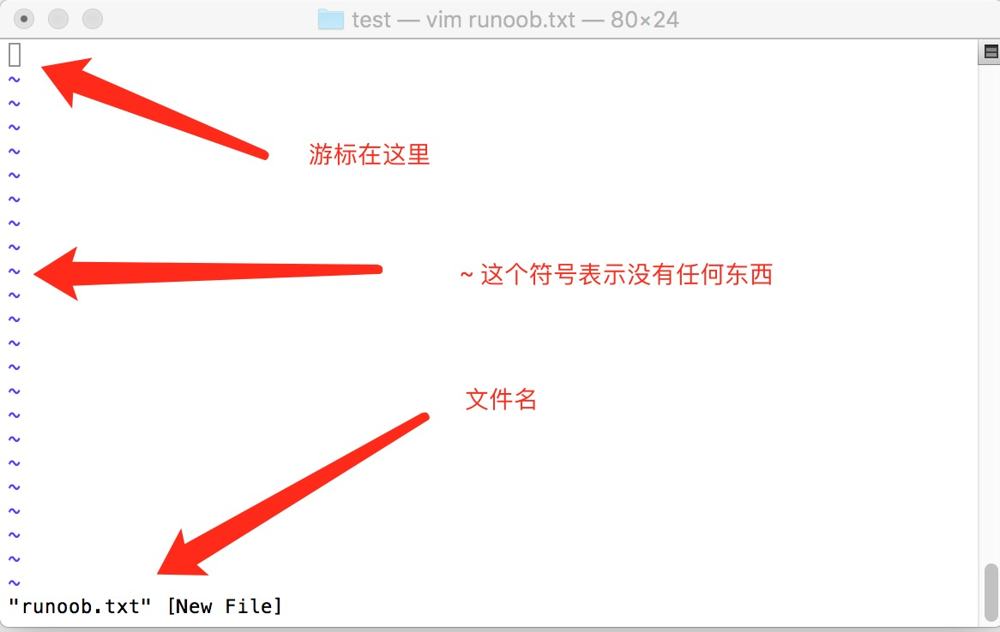
按下 i 进入输入模式(也称为编辑模式)，开始编辑文字
在一般模式之中，只要按下 i, o, a 等字符就可以进入输入模式了！
在编辑模式当中，你可以发现在左下角状态栏中会出现 –INSERT- 的字样，那就是可以输入任意字符的提示。
这个时候，键盘上除了 Esc 这个按键之外，其他的按键都可以视作为一般的输入按钮了，所以你可以进行任何的编辑。

按下 ESC 按钮回到一般模式
好了，假设我已经按照上面的样式给他编辑完毕了，那么应该要如何退出呢？是的！没错！就是给他按下 Esc 这个按钮即可！马上你就会发现画面左下角的 – INSERT – 不见了！
在一般模式中按下 :wq 储存后离开 vi
OK，我们要存档了，存盘并离开的指令很简单，输入 :wq 即可保存离开！
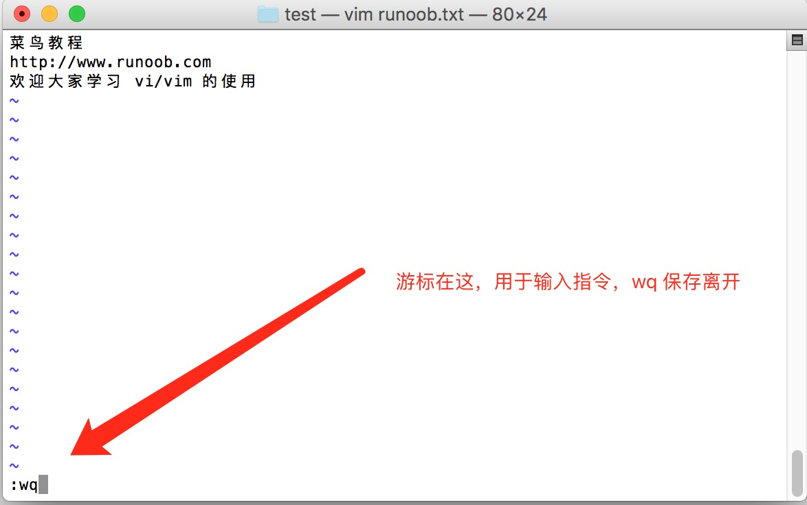
OK! 这样我们就成功创建了一个 runoob.txt 的文件。
vi/vim 按键说明
除了上面简易范例的 i, Esc, :wq 之外，其实 vim 还有非常多的按键可以使用。
第一部分：一般模式可用的光标移动、复制粘贴、搜索替换等
| 移动光标的方法 | |
|---|---|
| h 或 向左箭头键(←) | 光标向左移动一个字符 |
| j 或 向下箭头键(↓) | 光标向下移动一个字符 |
| k 或 向上箭头键(↑) | 光标向上移动一个字符 |
| l 或 向右箭头键(→) | 光标向右移动一个字符 |
| 如果你将右手放在键盘上的话，你会发现 hjkl 是排列在一起的，因此可以使用这四个按钮来移动光标。 如果想要进行多次移动的话，例如向下移动 30 行，可以使用 “30j” 或 “30↓” 的组合按键， 亦即加上想要进行的次数(数字)后，按下动作即可！ | |
| [Ctrl] + [f] | 屏幕『向下』移动一页，相当于 [Page Down]按键 (常用) |
| [Ctrl] + [b] | 屏幕『向上』移动一页，相当于 [Page Up] 按键 (常用) |
| [Ctrl] + [d] | 屏幕『向下』移动半页 |
| [Ctrl] + [u] | 屏幕『向上』移动半页 |
| + | 光标移动到非空格符的下一行 |
| - | 光标移动到非空格符的上一行 |
| n |
那个 n 表示『数字』，例如 20 。按下数字后再按空格键，光标会向右移动这一行的 n 个字符。例如 20 |
| 0 或功能键[Home] | 这是数字『 0 』：移动到这一行的最前面字符处 (常用) |
| $ 或功能键[End] | 移动到这一行的最后面字符处(常用) |
| H | 光标移动到这个屏幕的最上方那一行的第一个字符 |
| M | 光标移动到这个屏幕的中央那一行的第一个字符 |
| L | 光标移动到这个屏幕的最下方那一行的第一个字符 |
| G | 移动到这个档案的最后一行(常用) |
| nG | n 为数字。移动到这个档案的第 n 行。例如 20G 则会移动到这个档案的第 20 行(可配合 :set nu) |
| gg | 移动到这个档案的第一行，相当于 1G 啊！ (常用) |
| n |
n 为数字。光标向下移动 n 行(常用) |
| 搜索替换 | |
| /word | 向光标之下寻找一个名称为 word 的字符串。例如要在档案内搜寻 vbird 这个字符串，就输入 /vbird 即可！ (常用) |
| ?word | 向光标之上寻找一个字符串名称为 word 的字符串。 |
| n | 这个 n 是英文按键。代表重复前一个搜寻的动作。举例来说， 如果刚刚我们执行 /vbird 去向下搜寻 vbird 这个字符串，则按下 n 后，会向下继续搜寻下一个名称为 vbird 的字符串。如果是执行 ?vbird 的话，那么按下 n 则会向上继续搜寻名称为 vbird 的字符串！ |
| N | 这个 N 是英文按键。与 n 刚好相反，为『反向』进行前一个搜寻动作。 例如 /vbird 后，按下 N 则表示『向上』搜寻 vbird 。 |
| 使用 /word 配合 n 及 N 是非常有帮助的！可以让你重复的找到一些你搜寻的关键词！ | |
| :n1,n2s/word1/word2/g | n1 与 n2 为数字。在第 n1 与 n2 行之间寻找 word1 这个字符串，并将该字符串取代为 word2 ！举例来说，在 100 到 200 行之间搜寻 vbird 并取代为 VBIRD 则： 『:100,200s/vbird/VBIRD/g』。(常用) |
| :1,$s/word1/word2/g 或 :%s/word1/word2/g | 从第一行到最后一行寻找 word1 字符串，并将该字符串取代为 word2 ！(常用) |
| :1,$s/word1/word2/gc 或 :%s/word1/word2/gc | 从第一行到最后一行寻找 word1 字符串，并将该字符串取代为 word2 ！且在取代前显示提示字符给用户确认 (confirm) 是否需要取代！(常用) |
| 删除、复制与贴上 | |
| x, X | 在一行字当中，x 为向后删除一个字符 (相当于 [del] 按键)， X 为向前删除一个字符(相当于 [backspace] 亦即是退格键) (常用) |
| nx | n 为数字，连续向后删除 n 个字符。举例来说，我要连续删除 10 个字符， 『10x』。 |
| dd | 剪切游标所在的那一整行(常用)，用 p/P 可以粘贴。 |
| ndd | n 为数字。剪切光标所在的向下 n 行，例如 20dd 则是剪切 20 行(常用)，用 p/P 可以粘贴。 |
| d1G | 删除光标所在到第一行的所有数据 |
| dG | 删除光标所在到最后一行的所有数据 |
| d$ | 删除游标所在处，到该行的最后一个字符 |
| d0 | 那个是数字的 0 ，删除游标所在处，到该行的最前面一个字符 |
| yy | 复制游标所在的那一行(常用) |
| nyy | n 为数字。复制光标所在的向下 n 行，例如 20yy 则是复制 20 行(常用) |
| y1G | 复制游标所在行到第一行的所有数据 |
| yG | 复制游标所在行到最后一行的所有数据 |
| y0 | 复制光标所在的那个字符到该行行首的所有数据 |
| y$ | 复制光标所在的那个字符到该行行尾的所有数据 |
| p, P | p 为将已复制的数据在光标下一行贴上，P 则为贴在游标上一行！ 举例来说，我目前光标在第 20 行，且已经复制了 10 行数据。则按下 p 后， 那 10 行数据会贴在原本的 20 行之后，亦即由 21 行开始贴。但如果是按下 P 呢？ 那么原本的第 20 行会被推到变成 30 行。 (常用) |
| J | 将光标所在行与下一行的数据结合成同一行 |
| c | 重复删除多个数据，例如向下删除 10 行，[ 10cj ] |
| u | 复原前一个动作。(常用) |
| [Ctrl]+r | 重做上一个动作。(常用) |
| 这个 u 与 [Ctrl]+r 是很常用的指令！一个是复原，另一个则是重做一次～ 利用这两个功能按键，你的编辑，嘿嘿！很快乐的啦！ | |
| . | 不要怀疑！这就是小数点！意思是重复前一个动作的意思。 如果你想要重复删除、重复贴上等等动作，按下小数点『.』就好了！ (常用) |
第二部分：一般模式切换到编辑模式的可用的按钮说明
| 进入输入或取代的编辑模式 | |
|---|---|
| i, I | 进入输入模式(Insert mode)： i 为『从目前光标所在处输入』， I 为『在目前所在行的第一个非空格符处开始输入』。 (常用) |
| a, A | 进入输入模式(Insert mode)： a 为『从目前光标所在的下一个字符处开始输入』， A 为『从光标所在行的最后一个字符处开始输入』。(常用) |
| o, O | 进入输入模式(Insert mode)： 这是英文字母 o 的大小写。o 为在目前光标所在的下一行处输入新的一行； O 为在目前光标所在的上一行处输入新的一行！(常用) |
| r, R | 进入取代模式(Replace mode)： r 只会取代光标所在的那一个字符一次；R会一直取代光标所在的文字，直到按下 ESC 为止；(常用) |
| 上面这些按键中，在 vi 画面的左下角处会出现『—INSERT—』或『—REPLACE—』的字样。 由名称就知道该动作了吧！！特别注意的是，我们上面也提过了，你想要在档案里面输入字符时， 一定要在左下角处看到 INSERT 或 REPLACE 才能输入喔！ | |
| [Esc] | 退出编辑模式，回到一般模式中(常用) |
第三部分：一般模式切换到指令行模式的可用的按钮说明
| 指令行的储存、离开等指令 | |
|---|---|
| :w | 将编辑的数据写入硬盘档案中(常用) |
| :w! | 若文件属性为『只读』时，强制写入该档案。不过，到底能不能写入， 还是跟你对该档案的档案权限有关啊！ |
| :q | 离开 vi (常用) |
| :q! | 若曾修改过档案，又不想储存，使用 ! 为强制离开不储存档案。 |
| 注意一下啊，那个惊叹号 (!) 在 vi 当中，常常具有『强制』的意思～ | |
| :wq | 储存后离开，若为 :wq! 则为强制储存后离开 (常用) |
| ZZ | 这是大写的 Z 喔！如果修改过，保存当前文件，然后退出！效果等同于(保存并退出) |
| ZQ | 不保存，强制退出。效果等同于 :q!。 |
| :w [filename] | 将编辑的数据储存成另一个档案（类似另存新档） |
| :r [filename] | 在编辑的数据中，读入另一个档案的数据。亦即将 『filename』 这个档案内容加到游标所在行后面 |
| :n1,n2 w [filename] | 将 n1 到 n2 的内容储存成 filename 这个档案。 |
| :! command | 暂时离开 vi 到指令行模式下执行 command 的显示结果！例如 『:! ls /home』即可在 vi 当中察看 /home 底下以 ls 输出的档案信息！ |
| vim 环境的变更 | |
| :set nu | 显示行号，设定之后，会在每一行的前缀显示该行的行号 |
| :set nonu | 与 set nu 相反，为取消行号！ |
特别注意，在 vi/vim 中，数字是很有意义的！数字通常代表重复做几次的意思！ 也有可能是代表去到第几个什么什么的意思。
举例来说，要删除 50 行，则是用 『50dd』 对吧！ 数字加在动作之前，如我要向下移动 20 行呢？那就是『20j』或者是『20↓』即可。
make
当你学习到这里的时候,你肯定已经对IDE编译C系语言程序已经是相当的熟悉了,那么下面,我们来简单看看使用GCC编译器编译程序的流程
这里是嵌入式C语言学习,意味着我们可能需要交叉编译器
sudo apt-get install gcc
sudo apt-get install gcc-arm-linux-gnuabi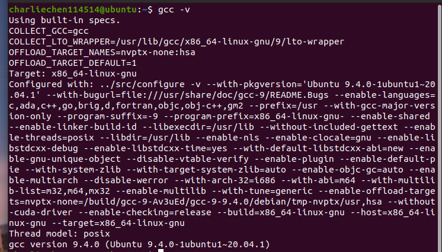
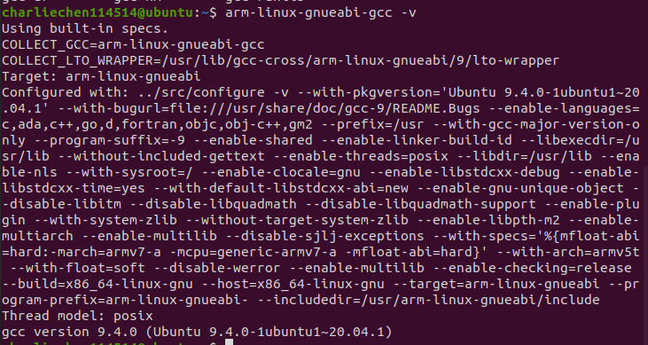
老样子，查看版本的方式检查我们的安装
使用GCC来编译我们的程序，很简单的：
好习惯，对于一个单独的测试我们开一个文件夹
mkdir test 回车ls一下，你会发现多出了一个test文件夹
cd test 上面的这个指令就是切换到test目录下， 下面尝试vim一个.c文件
vim gcc-try.c 你会看到一个船新的空白的页面。记住，这个时候，显得将模式切换到插入模式：也就是摁I键。
你会发现左下角就会有一个INSERT的单词代表现在你可以输入东西了。掏出你的老回忆
#include <stdio.h>
/* a default test gcc program */
int main()
{
printf("Hello, gcc-linux!"); // I decide nou to insert a slash here
return 0;
} 你知道的，首先摁ESC键退出，然后:wq一顿操作退出并且保存
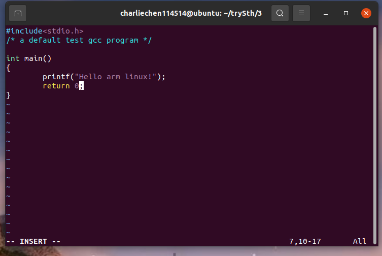
这是我当时写的，可能有带你不太一样，但是——都是学过C的，这个原理懂的。
下面，我们就需要调用GCC连编译他。 GCC一步到位的指令是
gcc -o ${TARGET} ${SOURCE} 试一下
gcc -o gcc-try gcc-try.c 如果你没什么语法错误，这一步将会相当的平和和迅速。
ls一下：
你瞧，多出来了一个gcc-try，就是我们指定的那样。对于可执行文件，我们所作的就是：
./gcc-try 呐！
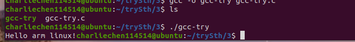
gcc当然还有其他的活！
扩展GCC：常用命令
Linux GCC常用命令 - 知乎 (zhihu.com)
1简介
GCC 的意思也只是 GNU C Compiler 而已。经过了这么多年的发展，GCC 已经不仅仅能支持 C 语言；它现在还支持 Ada 语言、C++ 语言、Java 语言、Objective C 语言、Pascal 语言、COBOL语言，以及支持函数式编程和逻辑编程的 Mercury 语言，等等。而 GCC 也不再单只是 GNU C 语言编译器的意思了，而是变成了 GNU Compiler Collection 也即是 GNU 编译器家族的意思了。另一方面，说到 GCC 对于操作系统平台及硬件平台支持，概括起来就是一句话：无所不在。
2简单编译
示例程序如下：
//test.c
#include
int main(void)
{
printf(“Hello World!\n”);
return 0;
}
这个程序，一步到位的编译指令是:
gcc test.c -o test
实质上，上述编译过程是分为四个阶段进行的，即预处理(也称预编译，Preprocessing)、编译(Compilation)、汇编 (Assembly)和连接(Linking)。
2.1预处理
gcc -E test.c -o test.i 或 gcc -E test.c
可以输出test.i文件中存放着test.c经预处理之后的代码。打开test.i文件，看一看，就明白了。后面那条指令，是直接在命令行窗口中输出预处理后的代码.
gcc的-E选项，可以让编译器在预处理后停止，并输出预处理结果。在本例中，预处理结果就是将stdio.h 文件中的内容插入到test.c中了。
2.2编译为汇编代码(Compilation)
预处理之后，可直接对生成的test.i文件编译，生成汇编代码：
gcc -S test.i -o test.s
gcc的-S选项，表示在程序编译期间，在生成汇编代码后，停止，-o输出汇编代码文件。
2.3汇编(Assembly)
对于上一小节中生成的汇编代码文件test.s，gas汇编器负责将其编译为目标文件，如下：
gcc -c test.s -o test.o
2.4连接(Linking)
gcc连接器是gas提供的，负责将程序的目标文件与所需的所有附加的目标文件连接起来，最终生成可执行文件。附加的目标文件包括静态连接库和动态连接库。
对于上一小节中生成的test.o，将其与Ｃ标准输入输出库进行连接，最终生成程序test
gcc test.o -o test
在命令行窗口中，执行./test, 让它说HelloWorld吧！
3多个程序文件的编译
通常整个程序是由多个源文件组成的，相应地也就形成了多个编译单元，使用GCC能够很好地管理这些编译单元。假设有一个由test1.c和 test2.c两个源文件组成的程序，为了对它们进行编译，并最终生成可执行程序test，可以使用下面这条命令：
gcc test1.c test2.c -o test
如果同时处理的文件不止一个，GCC仍然会按照预处理、编译和链接的过程依次进行。如果深究起来，上面这条命令大致相当于依次执行如下三条命令：
gcc -c test1.c -o test1.o
gcc -c test2.c -o test2.o
gcc test1.o test2.o -o test
4检错
gcc -pedantic illcode.c -o illcode
-pedantic编译选项并不能保证被编译程序与ANSI/ISO C标准的完全兼容，它仅仅只能用来帮助Linux程序员离这个目标越来越近。或者换句话说，-pedantic选项能够帮助程序员发现一些不符合 ANSI/ISO C标准的代码，但不是全部，事实上只有ANSI/ISO C语言标准中要求进行编译器诊断的那些情况，才有可能被GCC发现并提出警告。
除了-pedantic之外，GCC还有一些其它编译选项也能够产生有用的警告信息。这些选项大多以-W开头，其中最有价值的当数-Wall了，使用它能够使GCC产生尽可能多的警告信息。
gcc -Wall illcode.c -o illcode
GCC给出的警告信息虽然从严格意义上说不能算作错误，但却很可能成为错误的栖身之所。一个优秀的Linux程序员应该尽量避免产生警告信息，使自己的代码始终保持标准、健壮的特性。所以将警告信息当成编码错误来对待，是一种值得赞扬的行为！所以，在编译程序时带上-Werror选项，那么GCC会在所有产生警告的地方停止编译，迫使程序员对自己的代码进行修改，如下：
gcc -Werror test.c -o test
5库文件连接
开发软件时，完全不使用第三方函数库的情况是比较少见的，通常来讲都需要借助许多函数库的支持才能够完成相应的功能。从程序员的角度看，函数库实际上就是一些头文件（.h）和库文件（so、或lib、dll）的集合。。虽然Linux下的大多数函数都默认将头文件放到/usr/include/目录下，而库文件则放到/usr/lib/目录下；Windows所使用的库文件主要放在Visual Stido的目录下的include和lib，以及系统文件夹下。但也有的时候，我们要用的库不再这些目录下，所以GCC在编译时必须用自己的办法来查找所需要的头文件和库文件。
例如我们的程序test.c是在linux上使用c连接mysql，这个时候我们需要去mysql官网下载MySQL Connectors的C库，下载下来解压之后，有一个include文件夹，里面包含mysql connectors的头文件，还有一个lib文件夹，里面包含二进制so文件libmysqlclient.so
其中inclulde文件夹的路径是/usr/dev/mysql/include,lib文件夹是/usr/dev/mysql/lib
5.1编译成可执行文件
首先我们要进行编译test.c为目标文件，这个时候需要执行
gcc –c –I /usr/dev/mysql/include test.c –o test.o
5.2链接
最后我们把所有目标文件链接成可执行文件:
gcc –L /usr/dev/mysql/lib –lmysqlclient test.o –o test
Linux下的库文件分为两大类分别是动态链接库（通常以.so结尾）和静态链接库（通常以.a结尾），二者的区别仅在于程序执行时所需的代码是在运行时动态加载的，还是在编译时静态加载的。
5.3强制链接时使用静态链接库
默认情况下， GCC在链接时优先使用动态链接库，只有当动态链接库不存在时才考虑使用静态链接库，如果需要的话可以在编译时加上-static选项，强制使用静态链接库。
在/usr/dev/mysql/lib目录下有链接时所需要的库文件libmysqlclient.so和libmysqlclient.a，为了让GCC在链接时只用到静态链接库，可以使用下面的命令:
gcc –L /usr/dev/mysql/lib –static –lmysqlclient test.o –o test
静态库链接时搜索路径顺序：
\1. ld会去找GCC命令中的参数-L
\2. 再找gcc的环境变量LIBRARY_PATH
\3. 再找内定目录 /lib /usr/lib /usr/local/lib 这是当初compile gcc时写在程序内的
动态链接时、执行时搜索路径顺序:
\1. 编译目标代码时指定的动态库搜索路径
\2. 环境变量LD_LIBRARY_PATH指定的动态库搜索路径
\3. 配置文件/etc/ld.so.conf中指定的动态库搜索路径
\4. 默认的动态库搜索路径/lib
\5. 默认的动态库搜索路径/usr/lib
有关环境变量：
LIBRARY_PATH环境变量：指定程序静态链接库文件搜索路径
LD_LIBRARY_PATH环境变量：指定程序动态链接库文件搜索路径
扩展结束
我们来尝试一个：
gcc -E -C gcc-try.c > gcc-try.i 回忆下（或者找我的博客，这里用到了文件重定向符的知识）
我们这行指令的意思，就是保留注释的，将gcc-try.c进行预处理产生的结果输出到gcc-try.i文件里去。这恰恰验证了一个事情：就是#include就是将被包含文件的代码粘贴到目标源文件上去
手撸MakeFile
我们尝试一下MakeFile.体验下感觉。
我们知道，我们往往回去编译一些大的工程：比如说Linux内核这种，不幸的是，他有大约30000个源文件，还有数不清的链接关系，那怎么编译呢。
所以，我们请出战神makefile!
准备
先来整个最简单最简单的：整数相加工程
vim add.h#ifndef _ADD_H_
#define _ADD_H_
int add(int num1, int num2);
#endidvim add.c#include "add.h"
int add(int num1, int num2)
{
return num1 + num2;
}vim main.c#include <stdio.h>
#include "add.h"
int main()
{
int a = 1;
int b = 2;
printf("We test the function add: %d + %d = %d",a, b, add(a, b));
return 0;
} 好，到这里，我们可以开始整活了，手撸一个Makefile
.PHONY: all clean
all: hello
hello: main.o add.o
gcc -o hello main.o add.o
main.o: main.c
gcc -c main.c
add.o: add.c
gcc -c add.c
clean:
rm -f main.o add.o hello makefile是由一个个规则而来的，最通用的格式如下
target: rely
command 我们一般说目标是我们要生成的可执行文件或者是各个源文件所对应的目标文件
命令可以很多样：可以是编译命令，可以是链接命令，还可以是shell命令。
上面的.PHONY则是声明了一个伪目标（不是一个真正的存在的文件），可以看作是一个目标，一般选择第一个目标作为默认的目标
我们把Makefile放到跟源码目录同级的地方，然后，你知道的：
make MakeFile, 启动！
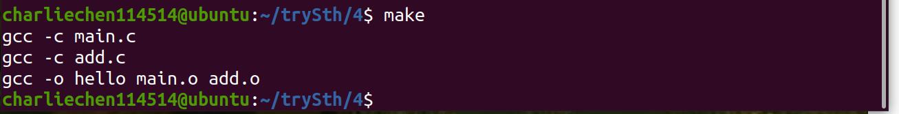
Git
啥是Git，简单来讲，托管代码的，我们的工程开发中常常可能会需要代码更改和管理。这玩意就是方便我们的管理而产生的。安装git 很简单
sudo apt-get install git 然后，我们需要声明一下，我们是谁：
git config --global user_email 114514@xb.com
git config --global user_name Tiansuohaoer —global: 配置 ~/.gitconfig文件，对当前用户下所有的仓库都有效
—system: 配置 /etc/gitconfig文件，对所有系统下的用户都生效
不配置则是只对当前的仓库生效
常用的Git命令
git init: 创建一个本地仓库
git add [FILES]: 添加文件到保护区
git commit : 提交更改到本地仓库
git log: 查看历史
git show commit_id: 根据提交ID查看提交的详细信息 当然，我们从头讲起
简单的讲，我们的仓库代码分为三个部分：工作区，暂存区和版本库。现在，我们干活:
mkdir gitProject
cd ./gitProject 我这边有个Git联系仓库，我们先把远程仓库克隆下来
git clone https://github.com/Charliechen114514/git-study-lol.git 我们先看看看这个仓库里有什么
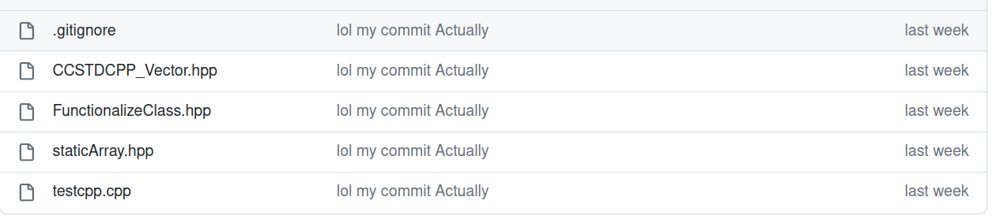
题外话
啥？git clone 的速度太感人了？简单：我们之所以访问github慢，是因为我们的特色的DNS污染，导致我们的访问速度感人，那么，我们只需要修改一下hosts，就可以解决问题。
首先可以查找一下github域名解析的结果有哪些（自行找网站查）
140.82.114.3 github.com
185.199.108.153 assets-cdn.github.com
199.232.69.194 github.global.ssl.fastly.net 至少这几个目前管用，听说github时常换解析。可能需要经常更新。
然后，记得重启一下network-manager（我的是NetWork-manager管理我的Ubuntu操作系统的网络，所以我重启这个，查看自己的网络管理器，修改就好）
/etc/NetworkManager restart 完事。
ping github.com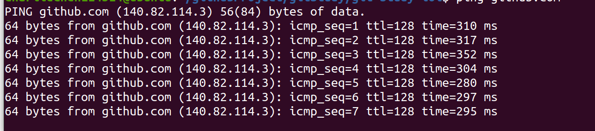
应该不算太卡。
好，现在，我们以这个作为基底，整一个本地仓库：
git init 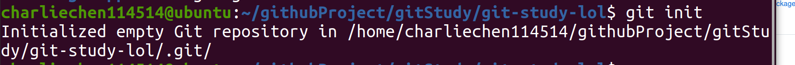
ls -a # 查看所有文件（./git是一个隐藏文件夹，所以需要这样搞） 现在，我们加上一个文件，比如说——我们测试一下g++是不是正常的，我们把文件整理一下
mkdir Vector
mv ./*.hpp ./Vector
mv ./*.cpp ./Vector
mkdir GppTest
cd GppTest 这样就会有上面的效果了（当然现在clone 下来的就已经分类好了）
vim gppTest.cpp#include <iosstream>
int main(){
std::cout << "This is a g++ && git test" << std::endl;
}
// ESC ,:wqg++ -o GPPTEST GppTest.cpp./GPPTEST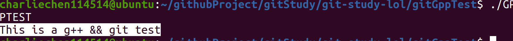
不难的，不是吗。
下面，我们添加所有的文件到暂存区去
git add .
git status # 查看状态如何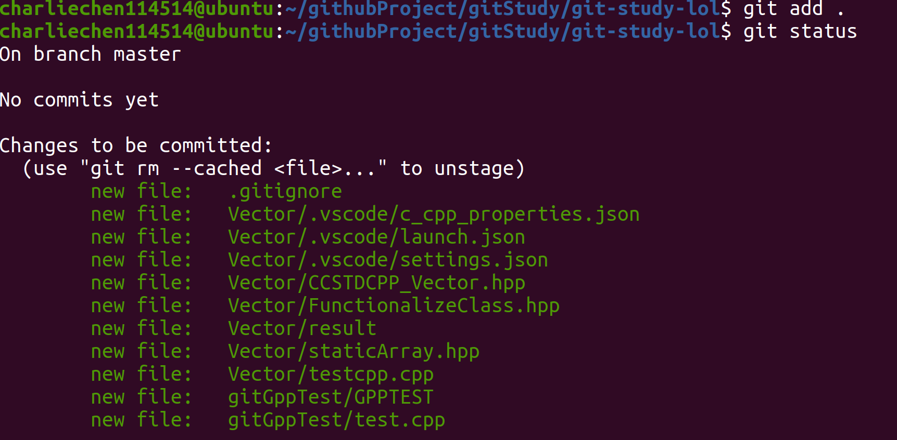
然后，提交到git本地仓库去
git commit -m "MSG" 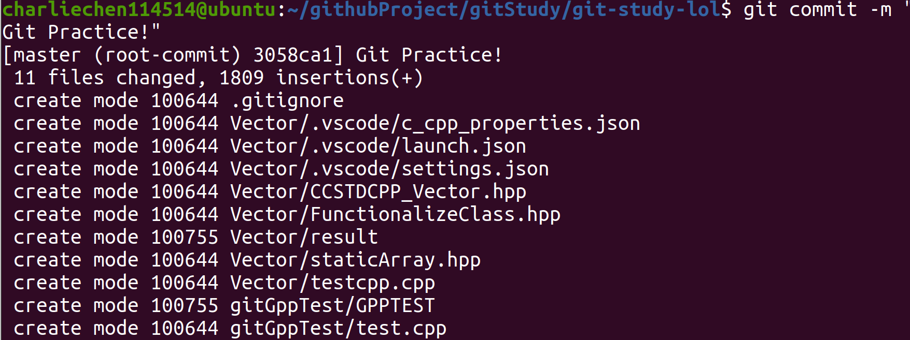
下面，我们指定一下本次提交的远程仓库
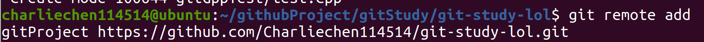
欢乐push
git push -u gitProject master 完事。
扩展
Git 使用教程：最详细、最傻瓜、最浅显、真正手把手教！（万字长文） - 知乎 (zhihu.com)
一：Git是什么？
Git是目前世界上最先进的分布式版本控制系统。
工作原理 / 流程：
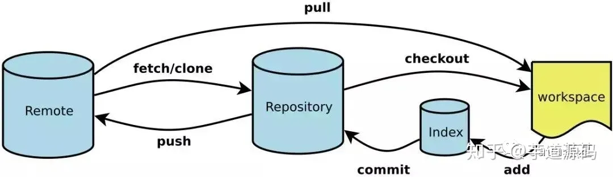
- Workspace：工作区
- Index / Stage：暂存区
- Repository：仓库区（或本地仓库）
- Remote：远程仓库
二：SVN与Git的最主要的区别？
SVN是集中式版本控制系统，版本库是集中放在中央服务器的，而干活的时候，用的都是自己的电脑，所以首先要从中央服务器哪里得到最新的版本，然后干活，干完后，需要把自己做完的活推送到中央服务器。集中式版本控制系统是必须联网才能工作，如果在局域网还可以，带宽够大，速度够快，如果在互联网下，如果网速慢的话，就纳闷了。
Git是分布式版本控制系统，那么它就没有中央服务器的，每个人的电脑就是一个完整的版本库，这样，工作的时候就不需要联网了，因为版本都是在自己的电脑上。既然每个人的电脑都有一个完整的版本库，那多个人如何协作呢？比如说自己在电脑上改了文件A，其他人也在电脑上改了文件A，这时，你们两之间只需把各自的修改推送给对方，就可以互相看到对方的修改了。
三、在windows上如何安装Git？
msysgit是 windows版的Git,如下：
需要从网上下载一个，然后进行默认安装即可。安装完成后，在开始菜单里面找到 “Git —> Git Bash”会弹出一个类似的命令窗口的东西，就说明Git安装成功。如下：
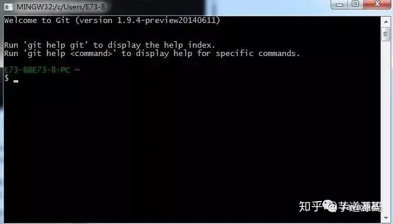
安装完成后，还需要最后一步设置，在命令行输入如下：
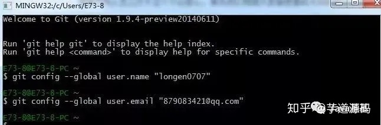
因为Git是分布式版本控制系统，所以需要填写用户名和邮箱作为一个标识。
注意：git config —global 参数，有了这个参数，表示你这台机器上所有的Git仓库都会使用这个配置，当然你也可以对某个仓库指定的不同的用户名和邮箱。
四：如何操作？
一：创建版本库。
什么是版本库？版本库又名仓库，英文名repository,你可以简单的理解一个目录，这个目录里面的所有文件都可以被Git管理起来，每个文件的修改，删除，Git都能跟踪，以便任何时刻都可以追踪历史，或者在将来某个时刻还可以将文件”还原”。
所以创建一个版本库也非常简单，如下我是D盘 –> www下 目录下新建一个testgit版本库。
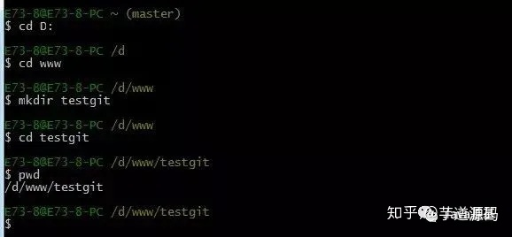
pwd 命令是用于显示当前的目录。
通过命令 git init 把这个目录变成git可以管理的仓库，如下：
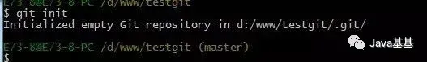
这时候你当前testgit目录下会多了一个.git的目录，这个目录是Git来跟踪管理版本的，没事千万不要手动乱改这个目录里面的文件，否则，会把git仓库给破坏了。如下：
下面先看下demo如下演示：
我在版本库testgit目录下新建一个记事本文件 readme.txt 内容如下：11111111
第一步：使用命令 git add readme.txt添加到暂存区里面去。如下：
如果和上面一样，没有任何提示，说明已经添加成功了。
第二步：用命令 git commit告诉Git，把文件提交到仓库。
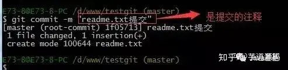
现在我们已经提交了一个readme.txt文件了，我们下面可以通过命令git status来查看是否还有文件未提交，如下：
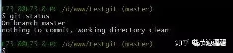
说明没有任何文件未提交，但是我现在继续来改下readme.txt内容，比如我在下面添加一行2222222222内容，继续使用git status来查看下结果，如下：
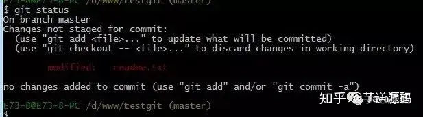
上面的命令告诉我们 readme.txt文件已被修改，但是未被提交的修改。
把文件添加到版本库中。
首先要明确下，所有的版本控制系统，只能跟踪文本文件的改动，比如txt文件，网页，所有程序的代码等，Git也不列外，版本控制系统可以告诉你每次的改动，但是图片，视频这些二进制文件，虽能也能由版本控制系统管理，但没法跟踪文件的变化，只能把二进制文件每次改动串起来，也就是知道图片从1kb变成2kb，但是到底改了啥，版本控制也不知道。
接下来我想看下readme.txt文件到底改了什么内容，如何查看呢？可以使用如下命令：
git diff readme.txt 如下：
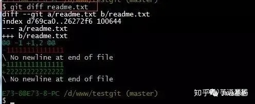
如上可以看到，readme.txt文件内容从一行11111111改成 二行 添加了一行22222222内容。
知道了对readme.txt文件做了什么修改后，我们可以放心的提交到仓库了，提交修改和提交文件是一样的2步(第一步是git add 第二步是：git commit)。
如下：
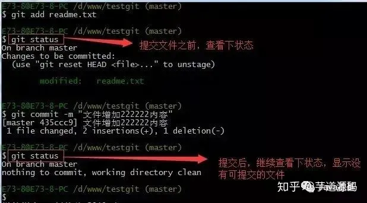
二：版本回退：
如上，我们已经学会了修改文件，现在我继续对readme.txt文件进行修改，再增加一行内容为33333333333333
现在我已经对readme.txt文件做了三次修改了，那么我现在想查看下历史记录，如何查呢？我们现在可以使用命令 git log 演示如下所示：
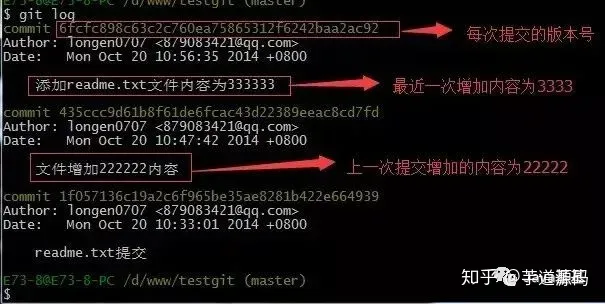
git log命令显示从最近到最远的显示日志，我们可以看到最近三次提交，最近的一次是,增加内容为333333.上一次是添加内容222222，第一次默认是 111111.如果嫌上面显示的信息太多的话，我们可以使用命令 git log –pretty=oneline 演示如下：
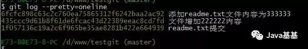
现在我想使用版本回退操作，我想把当前的版本回退到上一个版本，要使用什么命令呢？可以使用如下2种命令，第一种是：git reset —hard HEAD^ 那么如果要回退到上上个版本只需把HEAD^ 改成 HEAD^^ 以此类推。那如果要回退到前100个版本的话，使用上面的方法肯定不方便，我们可以使用下面的简便命令操作：git reset —hard HEAD~100 即可。未回退之前的readme.txt内容如下：
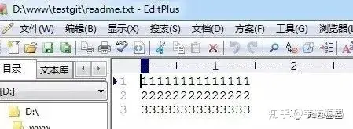
如果想回退到上一个版本的命令如下操作：
再来查看下 readme.txt内容如下：通过命令cat readme.txt查看
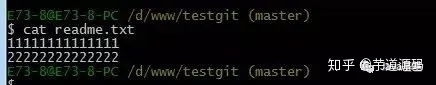
可以看到，内容已经回退到上一个版本了。我们可以继续使用git log 来查看下历史记录信息，如下：
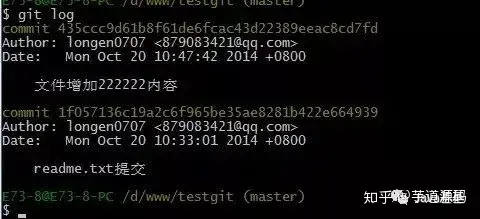
我们看到 增加333333 内容我们没有看到了，但是现在我想回退到最新的版本，如：有333333的内容要如何恢复呢？我们可以通过版本号回退，使用命令方法如下：
git reset —hard 版本号 ，但是现在的问题假如我已经关掉过一次命令行或者333内容的版本号我并不知道呢？要如何知道增加3333内容的版本号呢？可以通过如下命令即可获取到版本号：git reflog 演示如下：
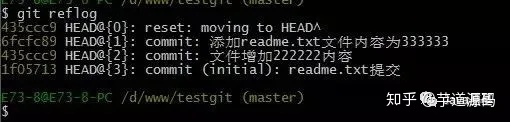
通过上面的显示我们可以知道，增加内容3333的版本号是 6fcfc89.我们现在可以命令
git reset —hard 6fcfc89来恢复了。演示如下：
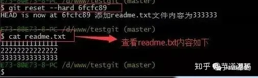
可以看到 目前已经是最新的版本了。
三：理解工作区与暂存区的区别？
- 工作区：就是你在电脑上看到的目录，比如目录下testgit里的文件(.git隐藏目录版本库除外)。或者以后需要再新建的目录文件等等都属于工作区范畴。
- 版本库(Repository)：工作区有一个隐藏目录.git,这个不属于工作区，这是版本库。其中版本库里面存了很多东西，其中最重要的就是stage(暂存区)，还有Git为我们自动创建了第一个分支master,以及指向master的一个指针HEAD。
我们前面说过使用Git提交文件到版本库有两步：
- 是使用 git add 把文件添加进去，实际上就是把文件添加到暂存区。
- 使用git commit提交更改，实际上就是把暂存区的所有内容提交到当前分支上。
我们继续使用demo来演示下：
我们在readme.txt再添加一行内容为4444444，接着在目录下新建一个文件为test.txt 内容为test，我们先用命令 git status来查看下状态，如下：
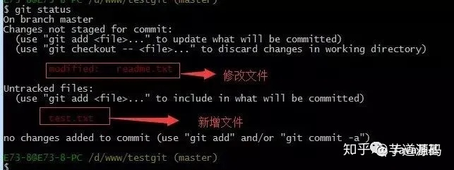
现在我们先使用git add 命令把2个文件都添加到暂存区中，再使用git status来查看下状态，如下：
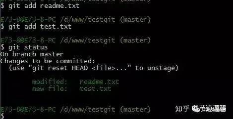
接着我们可以使用git commit一次性提交到分支上，如下：
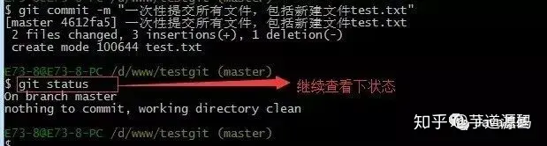
四：Git撤销修改和删除文件操作
一：撤销修改：
比如我现在在readme.txt文件里面增加一行 内容为555555555555，我们先通过命令查看如下：
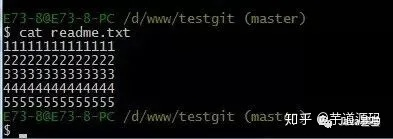
在我未提交之前，我发现添加5555555555555内容有误，所以我得马上恢复以前的版本，现在我可以有如下几种方法可以做修改：
- 如果我知道要删掉那些内容的话，直接手动更改去掉那些需要的文件，然后add添加到暂存区，最后commit掉。
- 我可以按以前的方法直接恢复到上一个版本。使用 git reset —hard HEAD^
但是现在我不想使用上面的2种方法，我想直接想使用撤销命令该如何操作呢？首先在做撤销之前，我们可以先用 git status 查看下当前的状态。如下所示：
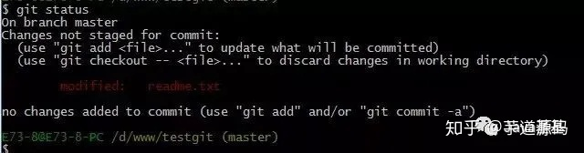
可以发现，Git会告诉你，git checkout — file 可以丢弃工作区的修改，如下命令：
git checkout — readme.txt,如下所示：
命令 git checkout —readme.txt 意思就是，把readme.txt文件在工作区做的修改全部撤销，这里有2种情况，如下：
- readme.txt自动修改后，还没有放到暂存区，使用 撤销修改就回到和版本库一模一样的状态。
- 另外一种是readme.txt已经放入暂存区了，接着又作了修改，撤销修改就回到添加暂存区后的状态
对于第二种情况，我想我们继续做demo来看下，假如现在我对readme.txt添加一行 内容为6666666666666，我git add 增加到暂存区后，接着添加内容7777777，我想通过撤销命令让其回到暂存区后的状态。如下所示：
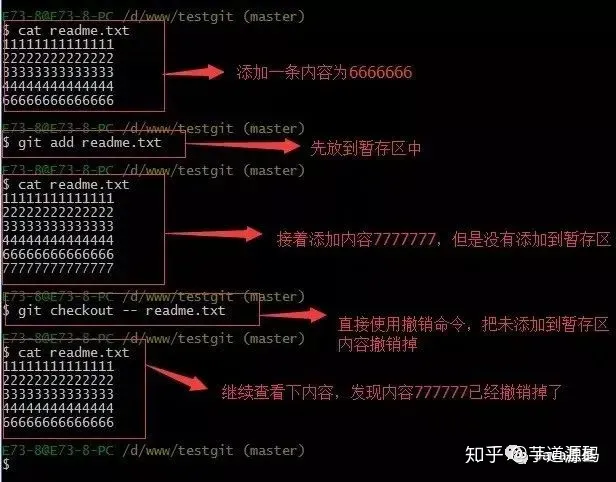
注意：命令git checkout — readme.txt 中的 — 很重要，如果没有 — 的话，那么命令变成创建分支了。
二：删除文件
假如我现在版本库testgit目录添加一个文件b.txt,然后提交。如下：
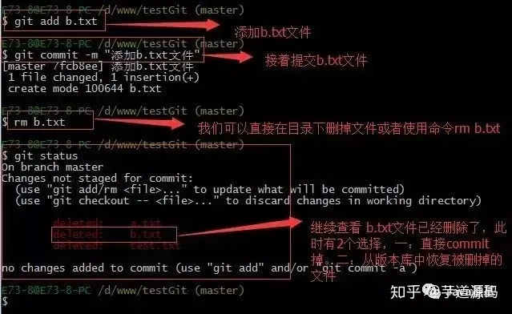
如上：一般情况下，可以直接在文件目录中把文件删了，或者使用如上rm命令：rm b.txt ，如果我想彻底从版本库中删掉了此文件的话，可以再执行commit命令 提交掉，现在目录是这样的，
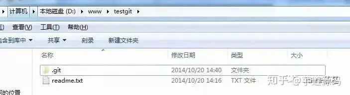
只要没有commit之前，如果我想在版本库中恢复此文件如何操作呢？
可以使用如下命令 git checkout — b.txt，如下所示：
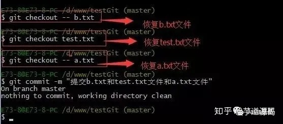
再来看看我们testgit目录，添加了3个文件了。如下所示：
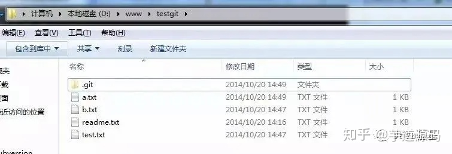
五：远程仓库
在了解之前，先注册github账号，由于你的本地Git仓库和github仓库之间的传输是通过SSH加密的，所以需要一点设置：
第一步：创建SSH Key。在用户主目录下，看看有没有.ssh目录，如果有，再看看这个目录下有没有id_rsa和id_rsa.pub这两个文件，如果有的话，直接跳过此如下命令，如果没有的话，打开命令行，输入如下命令：
ssh-keygen -t rsa –C “youremail@example.com”, 由于我本地此前运行过一次，所以本地有，如下所示：
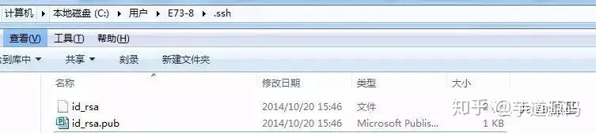
id_rsa是私钥，不能泄露出去，id_rsa.pub是公钥，可以放心地告诉任何人。
第二步：登录github,打开” settings”中的SSH Keys页面，然后点击“Add SSH Key”,填上任意title，在Key文本框里黏贴id_rsa.pub文件的内容。
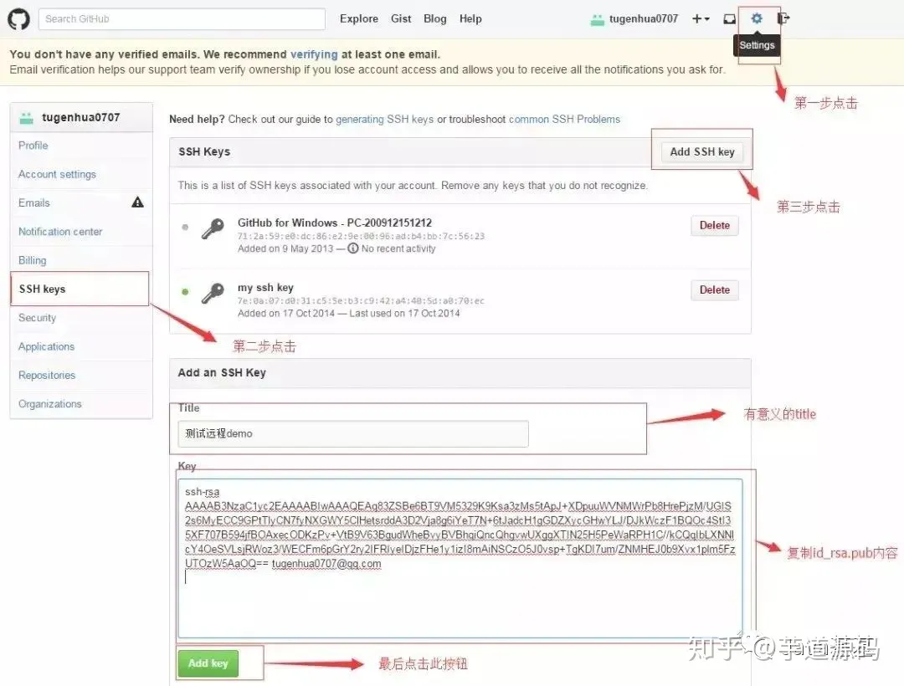
点击 Add Key，你就应该可以看到已经添加的key。
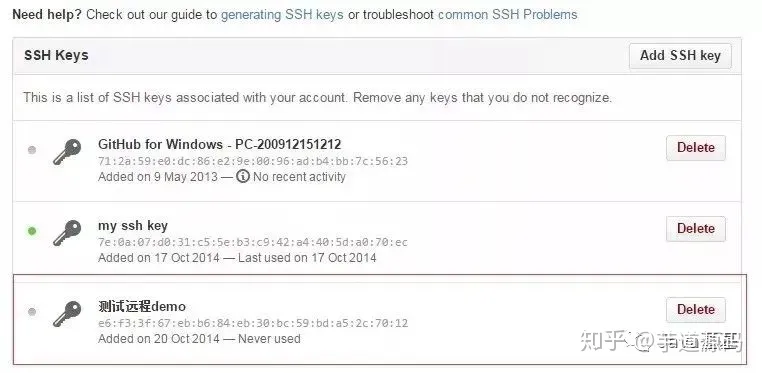
如何添加远程库？
现在的情景是：我们已经在本地创建了一个Git仓库后，又想在github创建一个Git仓库，并且希望这两个仓库进行远程同步，这样github的仓库可以作为备份，又可以其他人通过该仓库来协作。
首先，登录github上，然后在右上角找到“create a new repo”创建一个新的仓库。如下：
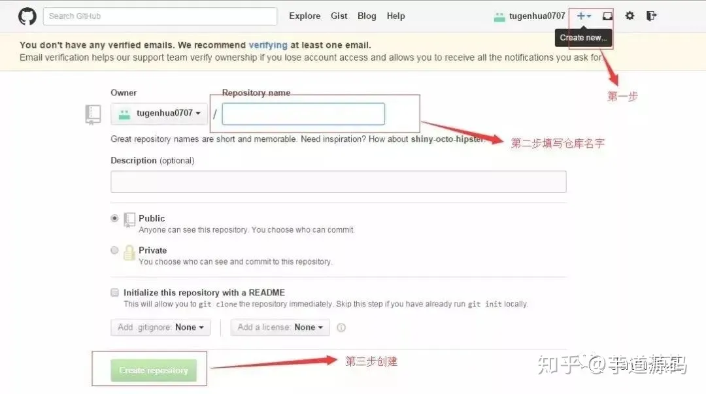
在Repository name填入testgit，其他保持默认设置，点击“Create repository”按钮，就成功地创建了一个新的Git仓库：
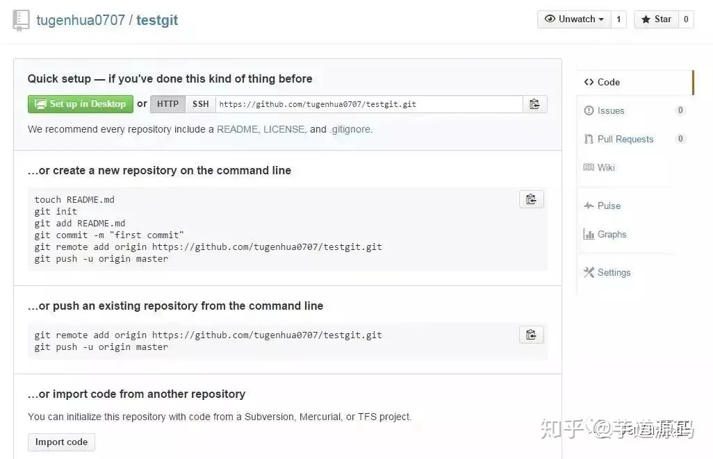
目前，在GitHub上的这个testgit仓库还是空的，GitHub告诉我们，可以从这个仓库克隆出新的仓库，也可以把一个已有的本地仓库与之关联，然后，把本地仓库的内容推送到GitHub仓库。
现在，我们根据GitHub的提示，在本地的testgit仓库下运行命令：
git remote add origin https://github.com/tugenhua0707/testgit.git所有的如下：
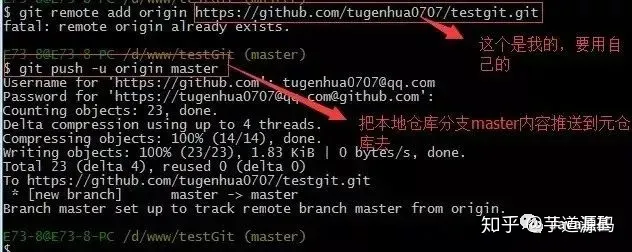
把本地库的内容推送到远程，使用 git push命令，实际上是把当前分支master推送到远程。
由于远程库是空的，我们第一次推送master分支时，加上了 –u参数，Git不但会把本地的master分支内容推送的远程新的master分支，还会把本地的master分支和远程的master分支关联起来，在以后的推送或者拉取时就可以简化命令。推送成功后，可以立刻在github页面中看到远程库的内容已经和本地一模一样了，上面的要输入github的用户名和密码如下所示：
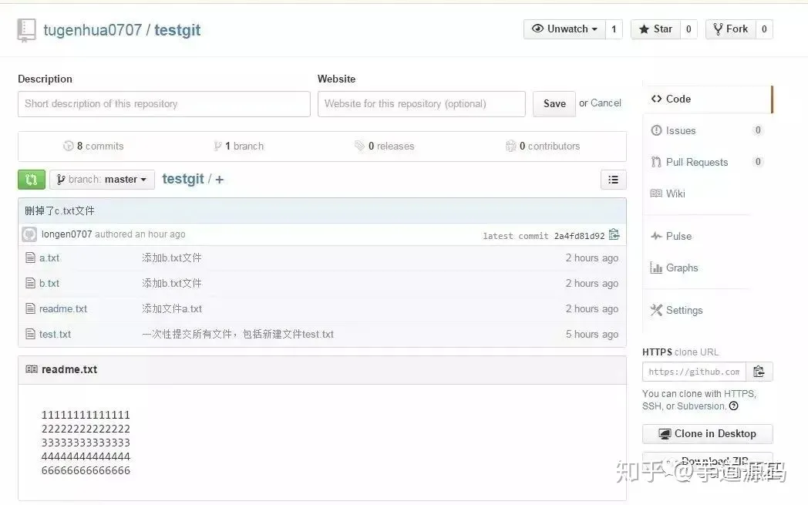
从现在起，只要本地作了提交，就可以通过如下命令：
git push origin master把本地master分支的最新修改推送到github上了，现在你就拥有了真正的分布式版本库了。
如何从远程库克隆？
上面我们了解了先有本地库，后有远程库时候，如何关联远程库。
现在我们想，假如远程库有新的内容了，我想克隆到本地来 如何克隆呢？
首先，登录github，创建一个新的仓库，名字叫testgit2.如下：
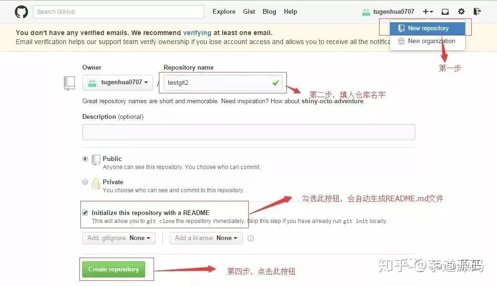
如下，我们看到：
现在，远程库已经准备好了，下一步是使用命令git clone克隆一个本地库了。如下所示：
接着在我本地目录下 生成testgit2目录了，如下所示：
六：创建与合并分支
在 版本回填退里，你已经知道，每次提交，Git都把它们串成一条时间线，这条时间线就是一个分支。截止到目前，只有一条时间线，在Git里，这个分支叫主分支，即master分支。HEAD严格来说不是指向提交，而是指向master，master才是指向提交的，所以，HEAD指向的就是当前分支。
首先，我们来创建dev分支，然后切换到dev分支上。如下操作：
git checkout命令加上 –b参数表示创建并切换，相当于如下2条命令
- git branch dev
- git checkout dev
git branch查看分支，会列出所有的分支，当前分支前面会添加一个星号。然后我们在dev分支上继续做demo，比如我们现在在readme.txt再增加一行 7777777777777
首先我们先来查看下readme.txt内容，接着添加内容77777777，如下：
现在dev分支工作已完成，现在我们切换到主分支master上，继续查看readme.txt内容如下：
现在我们可以把dev分支上的内容合并到分支master上了，可以在master分支上，使用如下命令 git merge dev 如下所示：
git merge命令用于合并指定分支到当前分支上，合并后，再查看readme.txt内容，可以看到，和dev分支最新提交的是完全一样的。
注意到上面的Fast-forward信息，Git告诉我们，这次合并是“快进模式”，也就是直接把master指向dev的当前提交，所以合并速度非常快。
合并完成后，我们可以接着删除dev分支了，操作如下：
总结创建与合并分支命令如下：
- 查看分支：git branch
- 创建分支：git branch name
- 切换分支：git checkout name
- 创建+切换分支：git checkout –b name
- 合并某分支到当前分支：git merge name
- 删除分支：git branch –d name
如何解决冲突？
下面我们还是一步一步来，先新建一个新分支，比如名字叫fenzhi1，在readme.txt添加一行内容8888888，然后提交，如下所示：
同样，我们现在切换到master分支上来，也在最后一行添加内容，内容为99999999，如下所示：
现在我们需要在master分支上来合并fenzhi1，如下操作：
Git用<<<<<<<，=======，>>>>>>>标记出不同分支的内容，其中<<
如果我想查看分支合并的情况的话，需要使用命令 git log.命令行演示如下：
分支管理策略
通常合并分支时，git一般使用”Fast forward”模式，在这种模式下，删除分支后，会丢掉分支信息，现在我们来使用带参数 –no-ff来禁用”Fast forward”模式。首先我们来做demo演示下：
- 创建一个dev分支。
- 修改readme.txt内容。
- 添加到暂存区。
- 切换回主分支(master)。
- 合并dev分支，使用命令 git merge –no-ff -m “注释” dev
- 查看历史记录
截图如下：
分支策略：首先master主分支应该是非常稳定的，也就是用来发布新版本，一般情况下不允许在上面干活，干活一般情况下在新建的dev分支上干活，干完后，比如上要发布，或者说dev分支代码稳定后可以合并到主分支master上来。
七：bug分支
在开发中，会经常碰到bug问题，那么有了bug就需要修复，在Git中，分支是很强大的，每个bug都可以通过一个临时分支来修复，修复完成后，合并分支，然后将临时的分支删除掉。
比如我在开发中接到一个404 bug时候，我们可以创建一个404分支来修复它，但是，当前的dev分支上的工作还没有提交。比如如下：
并不是我不想提交，而是工作进行到一半时候，我们还无法提交，比如我这个分支bug要2天完成，但是我issue-404 bug需要5个小时内完成。怎么办呢？还好，Git还提供了一个stash功能，可以把当前工作现场 ”隐藏起来”，等以后恢复现场后继续工作。如下：
所以现在我可以通过创建issue-404分支来修复bug了。
首先我们要确定在那个分支上修复bug，比如我现在是在主分支master上来修复的，现在我要在master分支上创建一个临时分支，演示如下：
修复完成后，切换到master分支上，并完成合并，最后删除issue-404分支。演示如下：
现在，我们回到dev分支上干活了。
工作区是干净的，那么我们工作现场去哪里呢？我们可以使用命令 git stash list来查看下。如下：
工作现场还在，Git把stash内容存在某个地方了，但是需要恢复一下，可以使用如下2个方法：
- git stash apply恢复，恢复后，stash内容并不删除，你需要使用命令git stash drop来删除。
- 另一种方式是使用git stash pop,恢复的同时把stash内容也删除了。
演示如下
八：多人协作
当你从远程库克隆时候，实际上Git自动把本地的master分支和远程的master分支对应起来了，并且远程库的默认名称是origin。
- 要查看远程库的信息 使用 git remote
- 要查看远程库的详细信息 使用 git remote –v
如下演示：
一：推送分支：
推送分支就是把该分支上所有本地提交到远程库中，推送时，要指定本地分支，这样，Git就会把该分支推送到远程库对应的远程分支上：使用命令 git push origin master
比如我现在的github上的readme.txt代码如下：
本地的readme.txt代码如下：
现在我想把本地更新的readme.txt代码推送到远程库中，使用命令如下：
我们可以看到如上，推送成功，我们可以继续来截图github上的readme.txt内容 如下：
可以看到 推送成功了，如果我们现在要推送到其他分支，比如dev分支上，我们还是那个命令 git push origin dev
那么一般情况下，那些分支要推送呢？
master分支是主分支，因此要时刻与远程同步。
一些修复bug分支不需要推送到远程去，可以先合并到主分支上，然后把主分支master推送到远程去。
二：抓取分支：
多人协作时，大家都会往master分支上推送各自的修改。现在我们可以模拟另外一个同事，可以在另一台电脑上（注意要把SSH key添加到github上）或者同一台电脑上另外一个目录克隆，新建一个目录名字叫testgit2
但是我首先要把dev分支也要推送到远程去，如下
接着进入testgit2目录，进行克隆远程的库到本地来，如下：
现在目录下生成有如下所示：
现在我们的小伙伴要在dev分支上做开发，就必须把远程的origin的dev分支到本地来，于是可以使用命令创建本地dev分支：
git checkout –b dev origin/dev现在小伙伴们就可以在dev分支上做开发了，开发完成后把dev分支推送到远程库时。
如下：
小伙伴们已经向origin/dev分支上推送了提交，而我在我的目录文件下也对同样的文件同个地方作了修改，也试图推送到远程库时，如下：
由上面可知：推送失败，因为我的小伙伴最新提交的和我试图推送的有冲突，解决的办法也很简单，上面已经提示我们，先用git pull把最新的提交从origin/dev抓下来，然后在本地合并，解决冲突，再推送。
git pull也失败了，原因是没有指定本地dev分支与远程origin/dev分支的链接，根据提示，设置dev和origin/dev的链接：如下：
这回git pull成功，但是合并有冲突，需要手动解决，解决的方法和分支管理中的 解决冲突完全一样。解决后，提交，再push：
我们可以先来看看readme.txt内容了。
现在手动已经解决完了，我接在需要再提交，再push到远程库里面去。如下所示：
因此：多人协作工作模式一般是这样的：
- 首先，可以试图用git push origin branch-name推送自己的修改.
- 如果推送失败，则因为远程分支比你的本地更新早，需要先用git pull试图合并。
- 如果合并有冲突，则需要解决冲突，并在本地提交。再用git push origin branch-name推送。